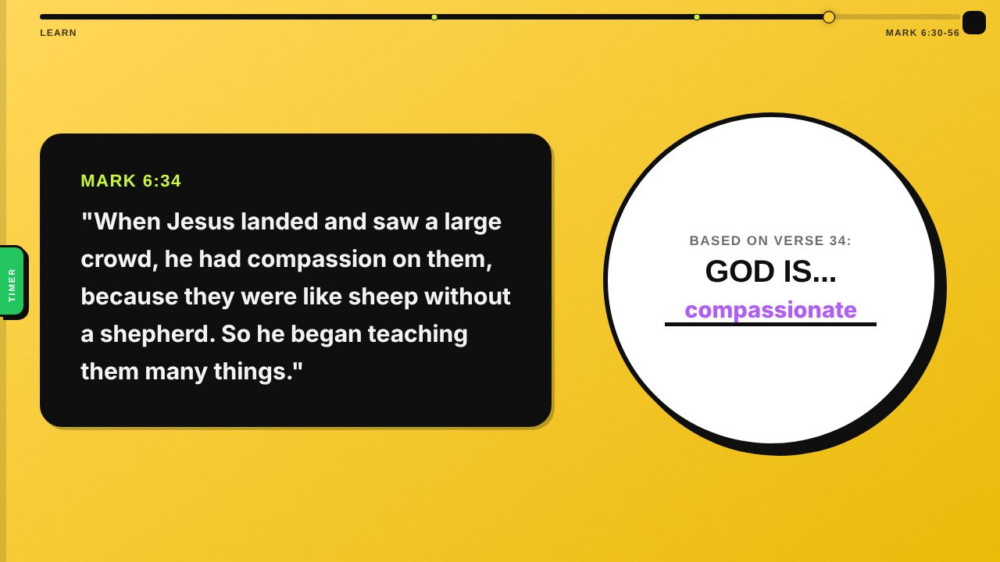
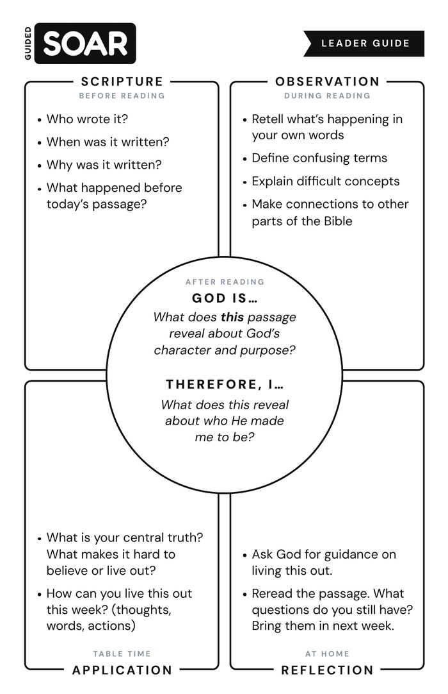
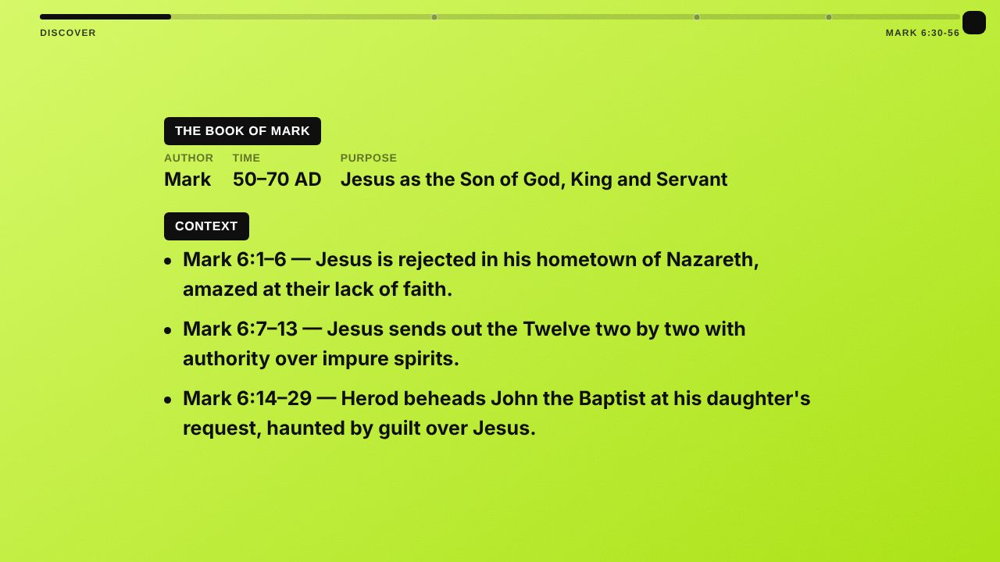
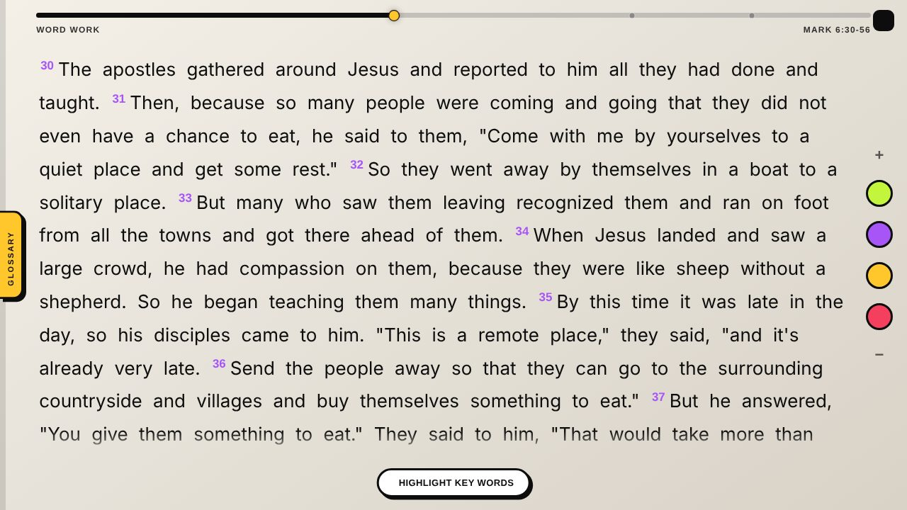
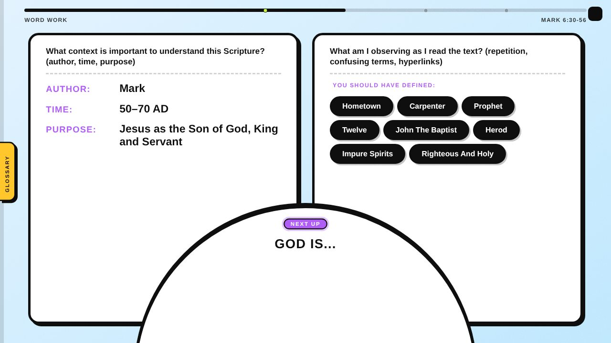
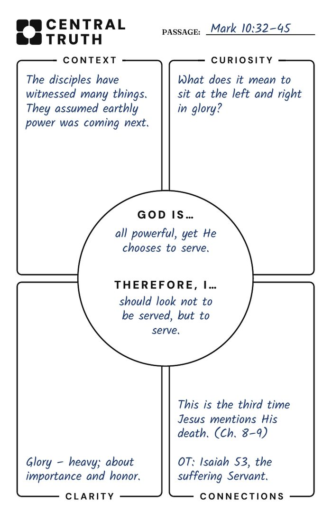

Case study
Guided SOAR
A guided-discovery reading routine that helps middle schoolers read the Bible for themselves, and equips volunteer leaders to facilitate it with very little prep time.

01 The problem
I noticed that many of our middle schoolers lacked the literacy skills to read the Bible on their own. They could listen to a message about a passage, but reading it themselves, and knowing what to look for, was a different story.
As a Christian, I see literacy as a gospel issue. If students can’t read the Bible for themselves, they depend on someone else to tell them what it says.
Performance goal
Students read a passage on their own, explain what it reveals about God, and name one way it applies to their life this week.
02 What success looks like
Before designing anything, I defined observable behaviors we could actually see in the room:
- Engaged, not just compliant. Students laughing, competing and talking.
- Handling their own Bibles. Reading aloud, highlighting, writing and asking questions.
- Finding meaning. Naming a central truth from the passage and discussing how it applies at their tables.
03 The solution
Instead of a curriculum, I designed a repeatable routine students can carry to any passage. Each step matches a moment in the reading:
- SScripture before reading
Who wrote it, when, why, and what came before. - OObservation during reading
Retell it, define confusing words, make connections. - ◎God is… Therefore, I… after reading
One central truth about God, and what it means for me. - AApplication table time
Why is this hard to believe? How can I live it out this week? - RReflection at home
Pray, reread, and bring questions back next week.


Why a routine? A one-off lesson teaches one passage. A routine teaches a skill. The guided card scaffolds every step; the blank card fades that support so students practice doing it on their own.
04 Key design decisions
Guided discovery, not lecture
Leaders ask questions instead of handing out answers. Telling students what to see robs them of the impact of discovering it.
One clear target
Every reading ends in a single fill-in-the-blank: “God is ___. Therefore, I ___.” It turns a long passage into one goal to read toward.
Comprehension before interpretation
Students get context and define words first, then interpret, then apply. Interpretation only works once they understand what they’re reading.
Designed for the real room
One tablet mirrored to a TV leads the whole group, while leaders preview the same flow on their phones during the week.
Questions at a 7th-grade level
Table questions are short, plain and tied to students’ world: school, sports, family, friends and online.
Prep that fits a volunteer’s week
Leaders walk through the same story-style flow students will see, in small chunks they can finish on a phone.
05 The shared-screen experience
Each week becomes a short, tap-through sequence that walks the room through the routine together.



06 Process and iteration
I designed every piece myself, testing ideas with other leaders and pulling in what worked in the room each week.
- Simplified the card. To make the routine less intimidating, I prototyped a lighter Central Truth card: one piece of context, one question, one point of clarity, one connection.
- Redesigned for the TV, then for phones. The lesson first went landscape-only for the shared screen. When leaders needed to prep on their phones, I rebuilt it to work in both.
- Added an edit mode. A slide’s context and key terms can be adjusted before Sunday, and the changes show up live on the shared screen.
- Built a team rhythm. On “Central Truth Saturday,” every volunteer studies the passage and posts their central truth, so the weekend leader sees it from several angles.

07 How I used AI
AI sped up the building so I could spend my time on the learning design.
AI helped me
- Prototype and iterate the interactive lesson each week
- Pull sourced definitions from trusted study resources, then rewrite them at a 7th-grade level
- Test the experience across screen sizes before Sunday
I owned
- The performance goal and the SOAR routine
- Every question, prompt and theological call
- Watching students use it and deciding what to change
08 Results
- More students bringing their own Bibles
- More students participating at their tables
- More volunteers prepping each week
- Students moving from recall to interpretation and application
Students tell us the routine gives them a clear goal to guide their reading.
09 What’s next
I’m exploring a self-paced, game-based version with each student on their own device, and starting to track Bible-carrying and participation week to week so growth is measurable.